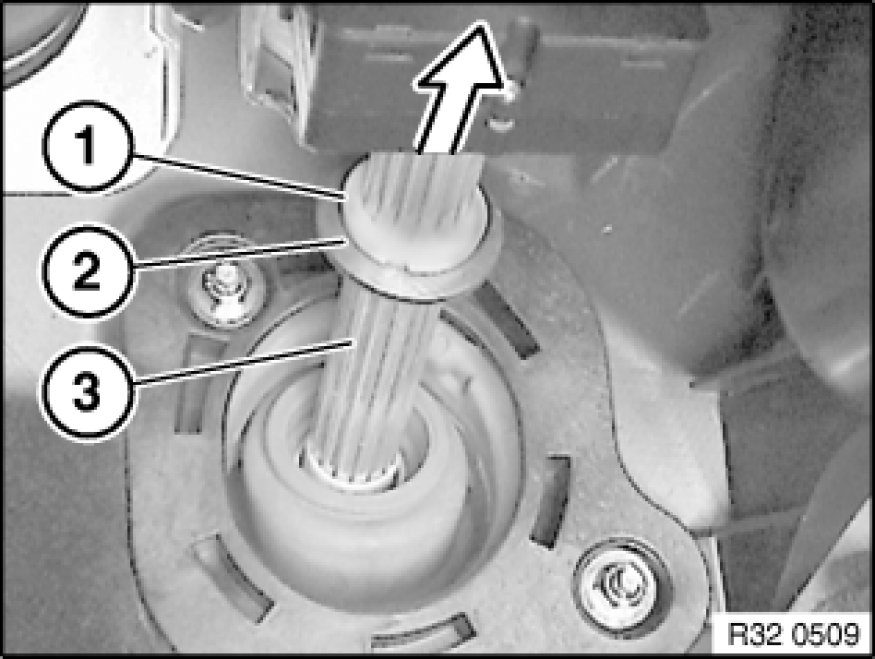

Replacing Steering Spindle Sleeve
32 31 102 - Replacing steering spindle sleeve

Necessary preliminary tasks:
- Remove lower section of steering spindle Removing and Installing/Replacing Lower Section of Steering Spindle
- Remove trim for pedal assembly 51 45 185 Removing and Installing/Replacing Panel For Pedals

Press crash disk (2) off crash sleeve (1).
Open crash sleeve (1) slightly and remove from upper steering spindle (3).
Slide upper steering spindle (3) into steering column.
Remove crash disk (2).
Installation:
Replace crash sleeve (1).
Unscrew nuts (1).
Remove sleeve bracket (2).
Installation:
Replace self-locking nuts.
Tightening torque 32 31 10AZ [1][2]Specifications.
Remove sleeve from bulkhead.
Installation:
Make sure sleeve is correctly seated in relation to opening in bulkhead.
After installation:
- Carry out steering angle sensor adjustment Adjustments